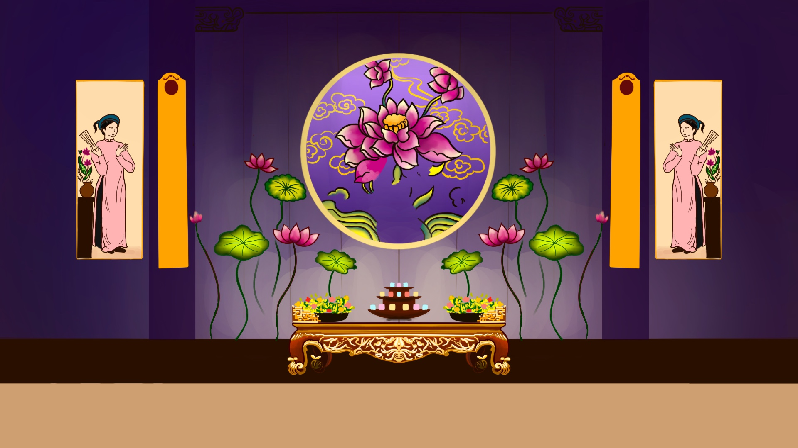
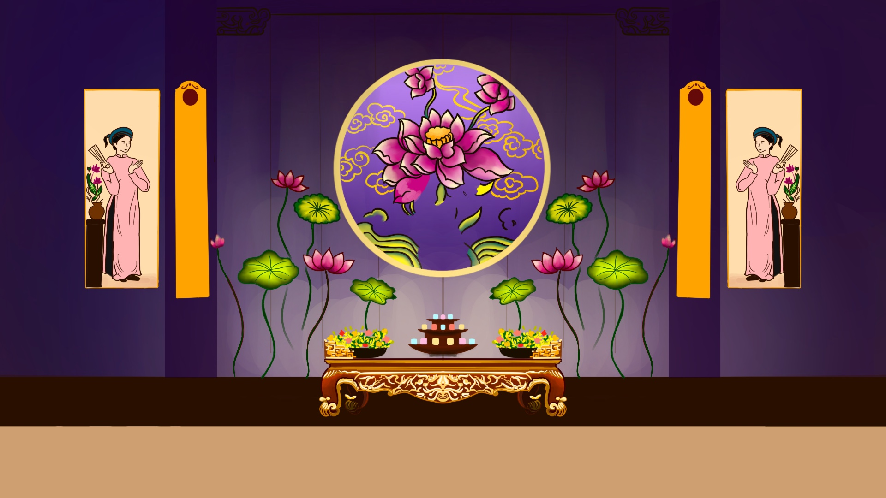

Chèo (Vietnamese folk opera) originated in northern Vietnam during the 11th century. It began as street performances and local festivals, combining music, dance, and drama to tell stories based on folk tales, legends, and social issues. Initially performed by traveling troupes, chèo became more structured over time, with a focus on moral lessons and humor. The art form is characterized by its lively, interactive nature and the use of simple yet expressive gestures, accompanied by traditional instruments. Chèo remains a beloved part of Vietnamese cultural heritage.
★★★★
Watching chèo is such a charming and down-to-earth experience. It has this warmth and humor that makes you feel right at home, even if it’s your first time seeing it. The performers are amazing at drawing you into their stories, which often mix folklore, daily life, and moral lessons with a touch of comedy and wit.
What I loved most is how interactive it can be. The actors sometimes engage with the audience, breaking the fourth wall with clever remarks or playful gestures, which makes the whole thing feel alive and spontaneous. The music, featuring instruments like the đàn nguyệt and sáo trúc, perfectly complements the storytelling, switching seamlessly between lively tunes and more emotional melodies.
 
